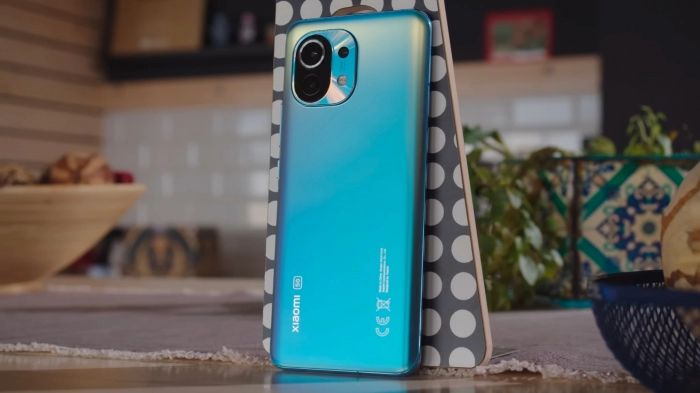

ПОВНИЙ ПЕРЕЛІК СМАРТФОНІВ, ЯКІ ОТРИМАЮТЬ ОНОВЛЕННЯ ДО ОСТАННЬОЇ ВЕРСІЇ ANDROID 14
На жаль, більшість брендів (за виключенням Xiaomi) після цього забивають на оновлення візуальної оболонки, через що смартфон, що не отримує нову версію Android більше не зможе вдихнути ковток «свіжого повітря», та можуть розраховувати лише на патчі безпеки.
А ще варто не забувати, що деякі розробники оновлюють свої смартфони швидко, деякі повільно, а деякі розділяють смартфони за пріоритетом оновлень. Даний список створено на основі інформації, яку розробник надає сам про термін оновлення їх пристроїв.
-
А якщо ви хочете швидко дізнатися, чи прийде оновлення на ваш смартфон - скористайтеся кнопками нижче для швидкого переходу до вашого бренду
- Google Pixel
- Samsung
- Xiaomi
- Realme
Google Pixel
Google завжди першим випускає оновлення для своїх смартфонів Pixel. Тут сюрпризів жодних - Android 14 отримають усі смартфони лінійки Pixel 5 та вище, а також Pixel 4A 5G.
На жаль, легенди Pixel 4 та Pixel 4 XL цього року за бортом, проте це максимально передбачувано, адже життєвий цикл смартфонів Google - 3 роки з моменту виходу.
Корейський гігант традиційно оперативно оновлює свої флагмани і деякі бюджетні моделі. Ось пристрої Samsung, які найімовірніше будуть оновлені до Android 14:
- Серія Galaxy Flip: усі смартфони, починаючи з Flip 3
- Серія Galaxy Fold: усі смартфони, починаючи з Fold 3
- Серія Galaxy S: усі смартфони, починаючи з S21
- Серія Galaxy A: A52, A53, A54, A33, Galaxy A34, A23, Galaxy A24, A13, Galaxy A14
- Серія Galaxy Tab: усі планшети, починаючи з Galaxy Tab S8
На жаль, цього року цикл оновлення покинули усі смартфони лінійки Galaxy S20 та Galaxy Note 20. А ще, час настільки швидко летить, що перші розкладні смартфони Samsung теж вже йдуть на покій: цього року нас покидає Galaxy Fold 2 та Galaxy Flip першого покоління.
Компанія Xiaomi оновлює в основному свої флагманські і середньобюджетні лінійки. Очікується Android 14 для: 
- Лінійка Xiaomi
- Усі смартфони лінійки Xiaomi 12 (окрім Xiaomi 12X)
- Усі смартфони лінійки Xiaomi 13
- Усі смартфони лінійки Xiaomi Mix Fold
- Планшети Xiaomi Pad 6 та Pad 6 Pro
- Лінійка Redmi
- Redmi Note 11R / 11T Pro / 11T Pro+
- Redmi Note 12 / 12 Pro / 12 Pro+ / 12 Pro Speed / 12 S / 12 Turbo
- Redmi K40S
- Лінійка Poco
- POCO C51, C55
- POCO M4 та вище
- POCO X4 5G / X4 GT, X5 / X5 Pro
- POCO F4 / F4 GT- POCO F5 / F5 Pro
Щож, можна прослідкувати тенденцію відмову підтримки смартфонів на Snapdragon 870 та Snapdragon 888. Також, невідома ситуація щодо Xiaomi Pad 5 та Pad 5 Pro, ця інформація потребує уточнення.
Що ж, тут не настільки все важко, бо плутанини в цих хлопців цього року взагалі нема.
- Усі смартфони серії Realme GT
- Уся лінійка Realme GT Neo починаючи з Neo 2
- Уся лінійки Realme 10, 11
- Realme 9, Realme 9 Pro, Realme 9 Pro Plus, Realme V25, Realme V23, Realme V23i, Realme V20
- Realme Narzo N55, Realme Narzo 50 5G, Realme Narzo 50 Pro 5G